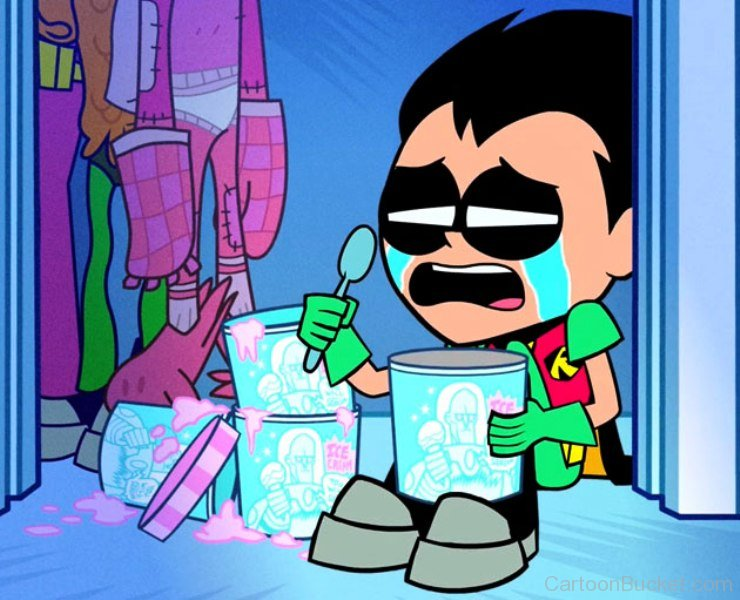
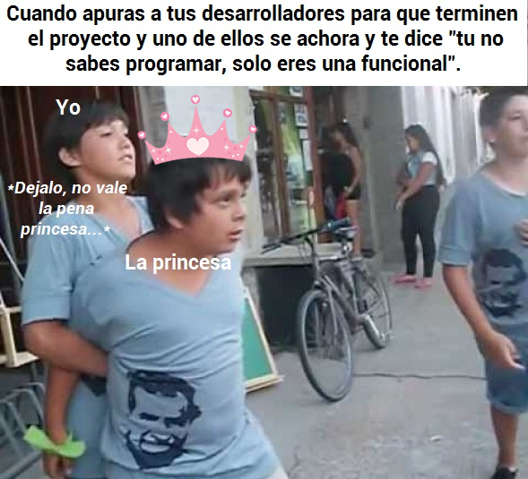
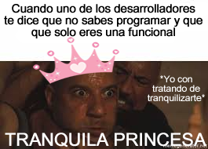
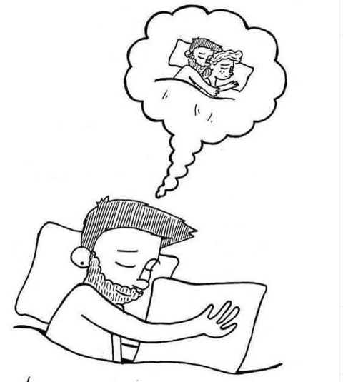
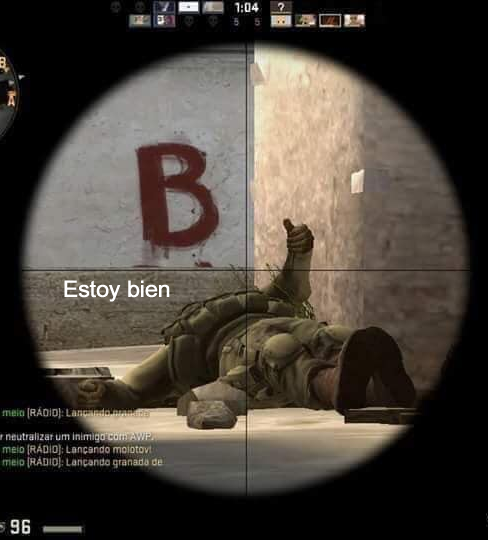
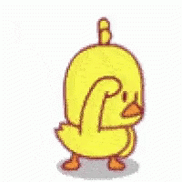

Blank Shadow
© 2020, Blank Shadow.
CARTA DIARIA 4
Fecha publicada: 06/03/2020.
02:37 pm
Hola hola señorita hermosa, preciosa, linda y dulce de mi corazón.
Ya por fin llego el viernes y casi fin de semana . Aunque seguro mañana te la pases trabajando...
 Literalmente estas asi por dentroPero bueno, no es como para recordar momentos tristes, pero lo que si vale la pena recordar es cuando te dijeron que no sabías programar y que solo eras una funcional (lo último no recuerdo, pero mientras más leña al fuego, mejor) .
 Literalmente que te digan eso, duele a cualquiera.  Yo me quedo con la primera, se asemeja a tu indignación .Lo que en realidad sucede es que te extraño de verdad. Anteriormente ya te dije que no pasamos tanto tiempo juntos pero, ahora te digo que todo el tiempo que hemos pasado separados me ha hecho dar cuenta lo tan importante que eres para mí.
 Yo todas las noches abrazando mi almohada imaginando que es la princesita que quiero mucho .3:15 pm
Puedo asegurar que cuando estoy contigo mis sentimientos y emociones son mucho mayores. Es decir, soy feliz como estoy en estos momentos, pero si estoy a tu lado soy increíblemente mucho mas feliz. Otro ejemplo, si bien ahora mismo te quiero mucho pero, cuando estoy a tu lado te quiero, te adoro, te amo, te pio mucho más. .
En resumen, eres la princesita preciosa, linda y adorable que me hace mucho mas feliz con solo estar ahí conmigo. Si me preguntas si te quiero, no sabría explicarte exactamente con palabras pero, si puedo confirmarte que yo siento que te quiero y amo mucho en cada segundo que pasa en este instante. Y si estás conmigo, lo siento mucho mas.
Incluso cuando eres Elsa (la princesa de hielo). Esa frialdad increíble que supera el cero absoluto (referencias de caballeros del zodiaco) es adorable. Claro, a veces te pasas de fría y quedo todo morido...
 Tranquilo muchachos, estoy bien .3:25 pm
En fin, ya casi son las 4:00 pm, estoy feliz y mi cuerpo lo siente.
 Yo aqui esperandote bien ansioso.Sin mas que pueda decirte... Te quiero mucho mi amor, eres una señorita increíble que me hace mejor persona para la sociedad. Cuídate mucho y que tengas un bonito día princesita preciosísima. Eres un amor que en ciertas ocasiones es fría y en otras muy cálida y confortante. Te quiero Abril .
Atentamente
tu pollo que siempre quiere verte sonreir .